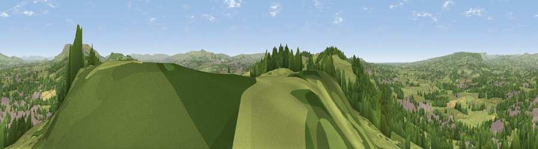

Whalley Nab
#8230 in England · top 13% of its area beats it · near BillingtonThe view, rendered

A 360° render of this exact spot computed from the terrain model, tree cover and land cover — summer colours, afternoon light, calibrated against photographs of famous viewpoints. Real trees, hedges and buildings will differ in detail.
The panorama
Grey silhouette: terrain skyline in each direction (720 bearings, Earth curvature and refraction included). Dashed green: skyline with trees (+15 m) and buildings (+8 m) as obstacles. Blue strip: how far the ground is visible on each bearing.
Where the view opens
Wedge length = distance to the farthest visible ground on that bearing (vegetation-aware). Rings at 10, 25 and 50 km.
What fills the view
64% grassland · 23% woodland · 11% built-up · 1% cropland
Angular shares of the visible panorama (visual magnitude), not map area. Landscape diversity 0.41 (0–1 Shannon).
Key numbers
More beautiful places nearby
The staircase of upgrades: each row has a higher view potential than everything closer. Driving times are estimates from straight-line distance, calibrated against real road routing — check an actual route before setting out.
| Place | Direction | Drive | Score |
|---|---|---|---|
| Viewpoint near Wilpshire | SW · 4 km | ~9 min | 66.7 |
| Wiswell Moor | NE · 4 km | ~9 min | 71.8 |
| Viewpoint near Pendleton | NE · 7 km | ~14 min | 72.1 |
| Great Hameldon | SE · 9 km | ~18 min | 74.2 |
| Viewpoint near Downham | NE · 9 km | ~18 min | 75.3 |
| Pendle Hill | NE · 10 km | ~19 min | 76.5 |
| Darwen Hill | SSW · 15 km | ~26 min | 80.7 |
| Rivington Pike | SSW · 23 km | ~38 min | 81.9 |
53.81351, -2.41040 · source: osm peak · position refined by local search. Computed location — check access rights before visiting.